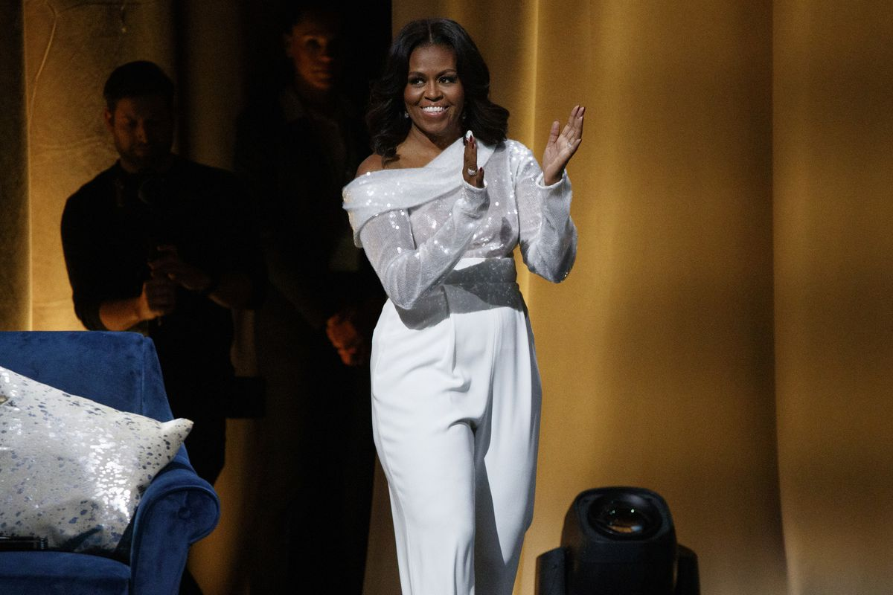

About Michelle

Michelle LaVaughn Robinson Obama (née Robinson; born January 17, 1964) is an American lawyer and author who was the first lady of the United States from 2009 to 2017.
She is married to the 44th President of the United States Barack Obama. She is the first African-American First Lady of the United States.

Raised on the South Side of Chicago, Illinois, Obama is a graduate of Princeton University and Harvard Law School. In her early legal career, she worked at the law firm Sidley Austin where she met Barack Obama.

She subsequently worked in non-profits and as the associate dean of Student Services at the University of Chicago as well as the vice president for Community and External Affairs of the University of Chicago Medical Center. Michelle married Barack in 1992, and they have two daughters.